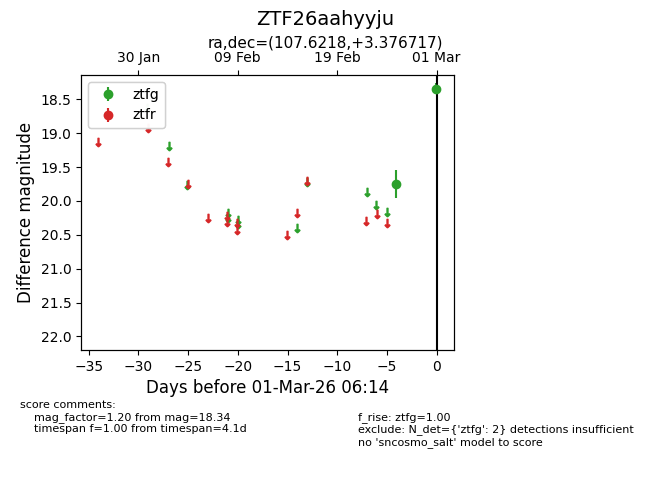
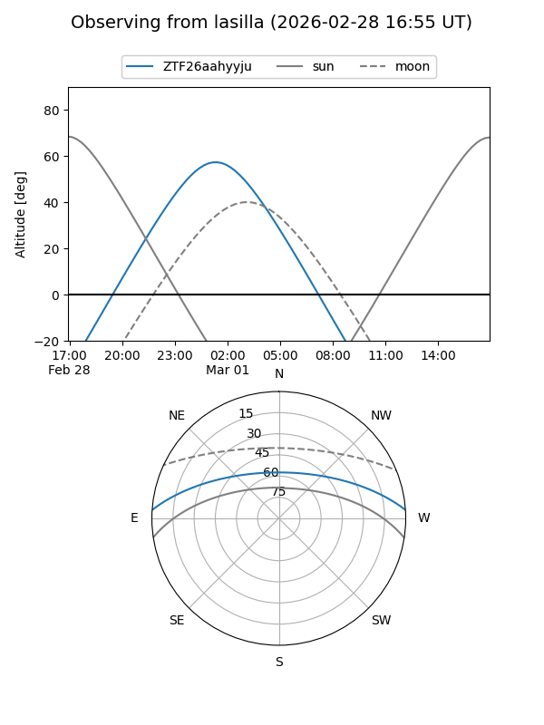
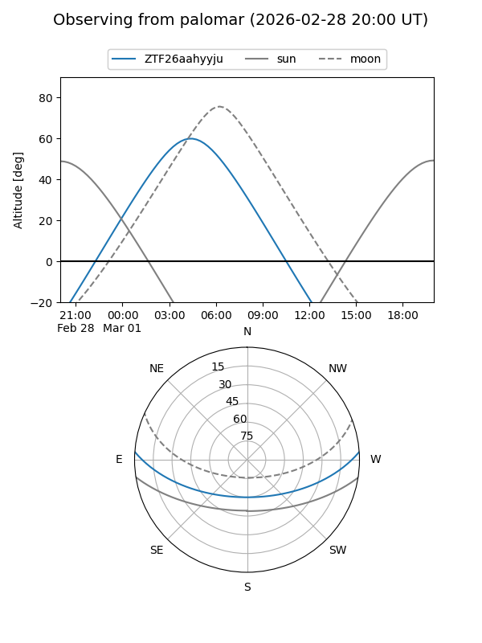

ZTF26aahyyju
Target ZTF26aahyyju at 2026-03-01 06:15
Aliases and brokers:
FINK: link
Lasair: link
ALeRCE: link
alt names
ZTF26aahyyju (ztf,fink_ztf)
Coordinates:
equatorial (ra, dec) = 107.6218,+3.37672
equatorial (HMS+DMS) = 07:10:29.22,+03:22:36.18
galactic (l, b) = (212.0894,+5.77476)
Flags:
Photometry:
last ztfg=18.34
2 ztfg detections
Lightcurve

Visibility


Additional plots